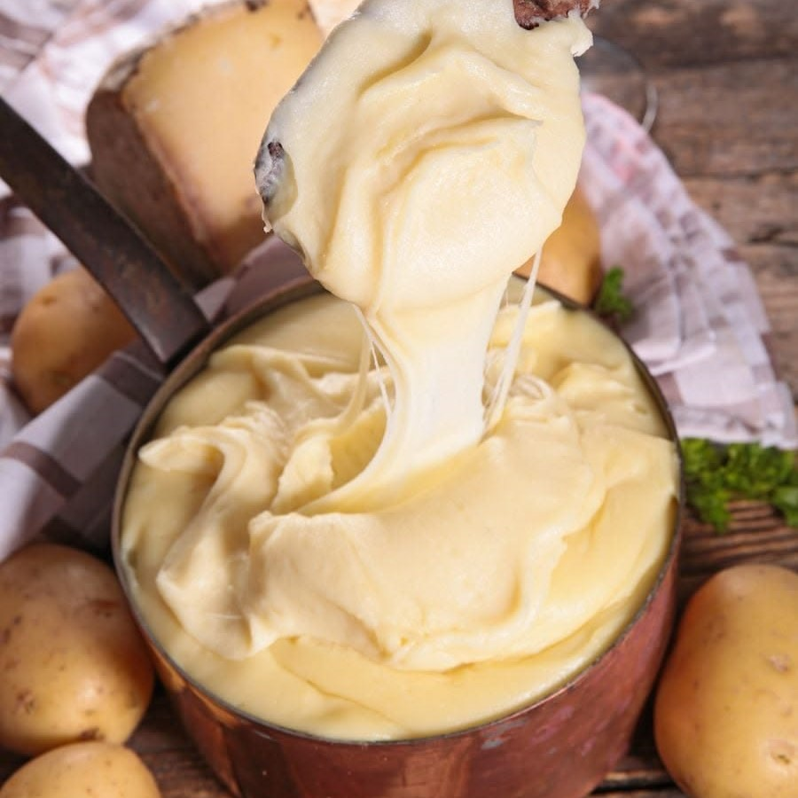

As batatas podem ser asterix, bintje, monalisa, agria. Mas pode também a inglesa, nenhum francês vai ti matar por usar batata inglesa) (um quilo de batata da costuma ser de 4 a 6 unidades médias)
Em vez do queijo gruyère ou tomme fraîche pode ser qualquer queijo meia cura. Você pode inverter também colocando 500 gramas de muçarela e 200/250 gramas de queijo meia cura ou 100 gramas de parmesão
Você pode substituir por creme de leite de caixa, é preferível o fresco pela gordura mas você pode substituir
